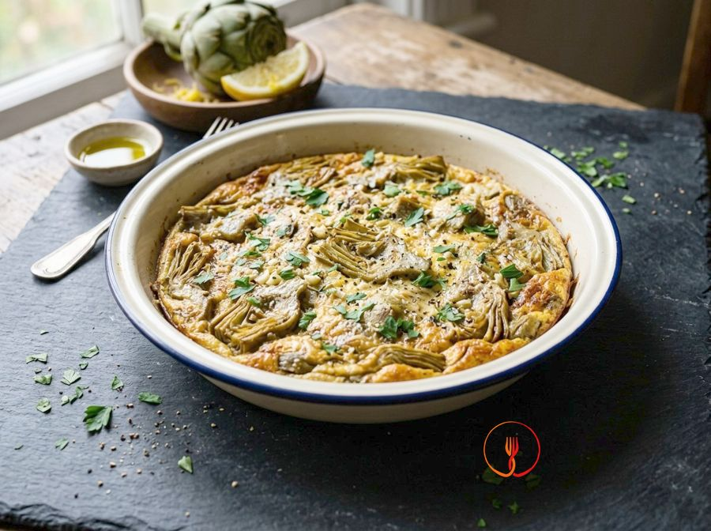

Frittata di carciofi
Ingredienti
- uova6 numero
- carciofi5 numero
- parmigiano40 gr
- aglio1 spicchio
- olio extravergine d'oliva30 ml
- Prezzemoloq.b.
- Sale e pepeq.b.
- limone1 numero
Allergeni
Latte, Uova
Procedimento
- Pulisci i carciofi, elimina le foglie dure e tagliali a fettine sottili.
- Immergili in acqua e limone per evitare l'ossidazione.
- Scalda l'olio in padella con l'aglio e aggiungi i carciofi scolati.
- Cuoci per circa 15 minuti con un goccio d'acqua, fino a quando saranno morbidi.
- In una ciotola sbatti le uova con parmigiano, sale, pepe e prezzemolo tritato.
- Elimina l'aglio e versa le uova sui carciofi, distribuendole uniformemente.
- Cuoci a fiamma bassa con il coperchio per circa 7–8 minuti.
- Gira la frittata aiutandoti con un piatto e completa la cottura dall'altro lato.
Consigli dello chef
Consigli e alternative:
- Non aggiungere i carciofi crudi direttamente alle uova: potrebbero rimanere duri.
- Per una versione più leggera cuoci la frittata in forno a 180 °C.
- Puoi aggiungere scamorza, ricotta o cubetti di prosciutto cotto.
Valori nutrizionali (stima)
| Per porzione (175 g) | Per 100 g | |
|---|---|---|
| Energia | 1067 kJ / 255 kcal | 611 kJ / 146 kcal |
| Proteine | 16 g | 9.2 g |
| Carboidrati | 11 g | 6.3 g |
| di cui zuccheri | 1.3 g | 0.7 g |
| Grassi | 18 g | 10 g |
| di cui saturi | 5.3 g | 3.0 g |
| Fibre | 5.4 g | 3.1 g |
| Sale | 0.5 g | 0.3 g |
Valori stimati con l'AI su dati medi CREA / USDA: sono indicativi e non sostituiscono il parere di un medico o di un nutrizionista.
Apri la ricetta nell'app per la lista della spesa, le schede ingredienti e i negozi vicini.